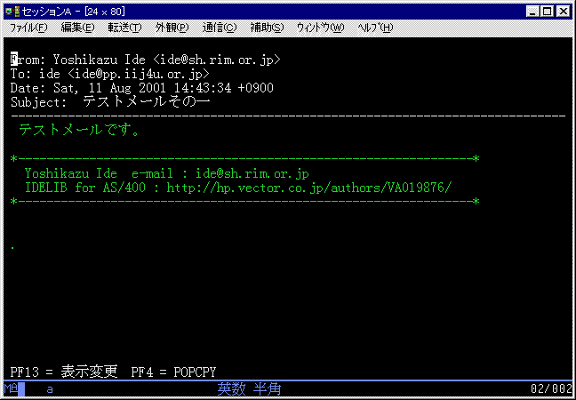

AS/400 POPメール表示コマンド POPSHW
掲載日: 2001/3/3, 更新日: 2001/8/11
＜概要＞
POPサーバーより受信したメールを画面表示します。
POPメール番号：POPCHKコマンドで受信したときにつけられる連番を指定します。

PF13 = 表示変更を押すと以下の画面が表示されます
添付ファイルは以下のように表示されます。
添付ファイルは
POPCPYコマンド
にてファイル出力が可能です。
添付ファイルにカーソルを合せて、Ｆ４キーを押すとPOPCPYコマンドが呼び出されます。
[戻る]